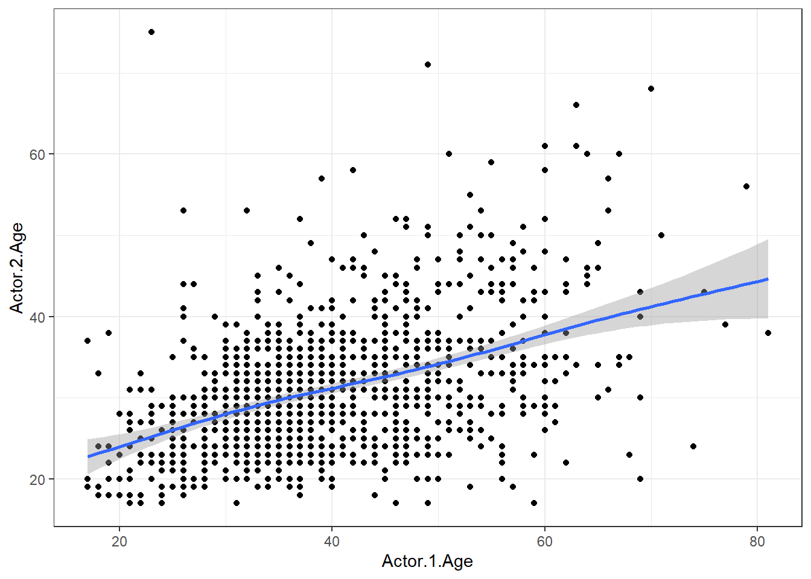
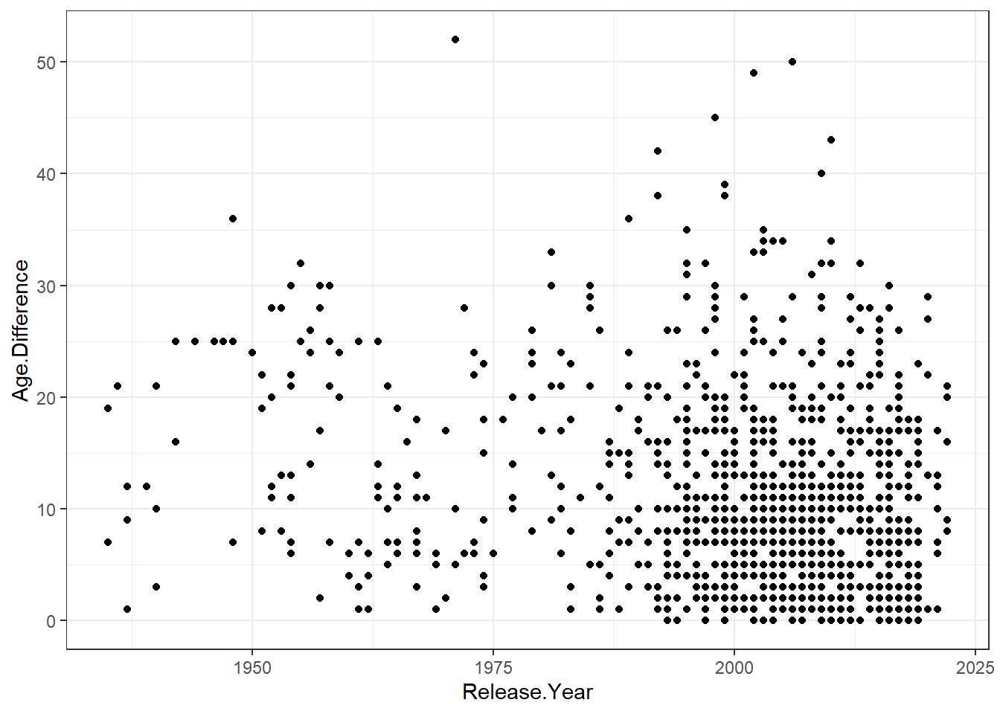
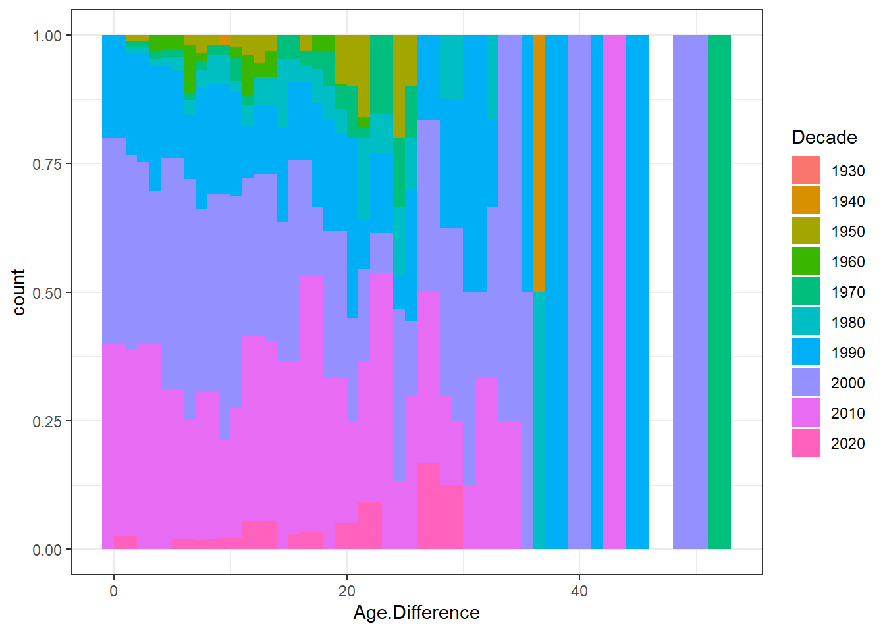
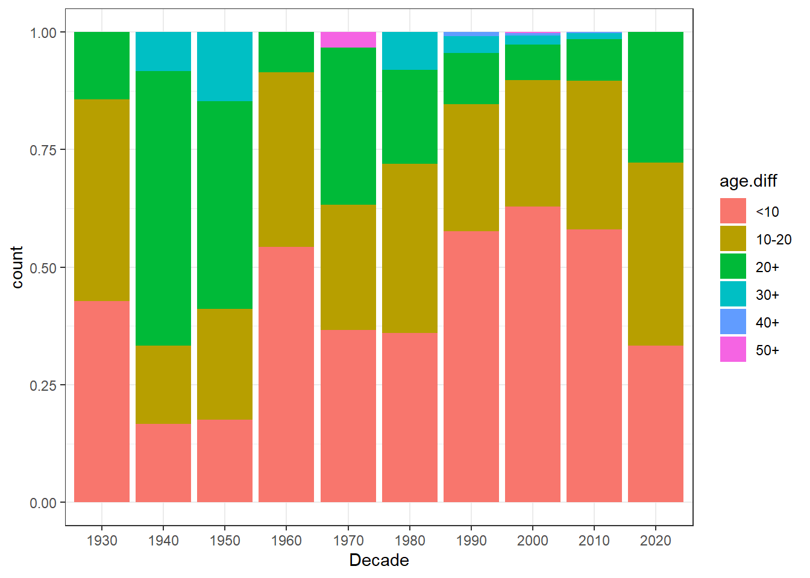

Rows: 1,155
Columns: 12
$ Movie.Name <chr> "Harold and Maude", "Venus", "The Quiet American", "…
$ Release.Year <int> 1971, 2006, 2002, 1998, 2010, 1992, 2009, 1999, 1992…
$ Director <chr> "Hal Ashby", "Roger Michell", "Phillip Noyce", "Joel…
$ Age.Difference <int> 52, 50, 49, 45, 43, 42, 40, 39, 38, 38, 36, 36, 35, …
$ Actor.1.Name <chr> "Bud Cort", "Peter O'Toole", "Michael Caine", "David…
$ Actor.1.Gender <chr> "man", "man", "man", "man", "man", "man", "man", "ma…
$ Actor.1.Birthdate <chr> "1948-03-29", "1932-08-02", "1933-03-14", "1930-09-1…
$ Actor.1.Age <int> 23, 74, 69, 68, 81, 59, 62, 69, 57, 77, 59, 56, 65, …
$ Actor.2.Name <chr> "Ruth Gordon", "Jodie Whittaker", "Do Thi Hai Yen", …
$ Actor.2.Gender <chr> "woman", "woman", "woman", "woman", "man", "woman", …
$ Actor.2.Birthdate <chr> "1896-10-30", "1982-06-03", "1982-10-01", "1975-11-0…
$ Actor.2.Age <int> 75, 24, 20, 23, 38, 17, 22, 30, 19, 39, 23, 20, 30, …Tidy Tuesday Exercise
This is my first Tidy Tuesday exercise! I feel like this is such a cool community to be a part of, and I’m excited to get into it.
First thing’s first, let’s load in the data.
Data Exploration
Alrighty, off the bat it looks like the first actor is usually a guy while the second one is a mix of men and women, but I want to check this out.
unique(movies$Actor.1.Gender) #There's both! How many of each?[1] "man" "woman"sum(movies$Actor.1.Gender == "man") #1139[1] 1139sum(movies$Actor.1.Gender == "woman") #16[1] 16unique(movies$Actor.2.Gender) [1] "woman" "man" sum(movies$Actor.2.Gender == "man") #17[1] 17sum(movies$Actor.2.Gender == "woman") #1138[1] 1138Do we have any overlap in the few where men/women are flipped?
movies %>%
filter(Actor.1.Name %in% Actor.2.Name)%>%
distinct(Actor.1.Name) Actor.1.Name
1 Julianne Moore
2 Ralph Fiennes
3 Daniel Craig
4 Cate Blanchett
5 James Franco
6 Matt Damon
7 Ewan McGregor
8 Matthew Goode
9 Léa Seydoux
10 Russell Brand
11 Charlize Theron
12 Rebecca Hall
13 Taye Diggs
14 Lena Headey
15 Heath Ledger
16 Kristin Scott Thomas
17 Annette Bening
18 Timothée Chalamet
19 Nicholas HoultOk so we have 19 actors that are in both Actor.1 and Actor.2. Right now we might not need to adjust for this, but it’s good to know for the future.
So there seems to be a flip-flop of leading men/ladies, and about 1 of each gender per film. So, the order of Actor 1 and Actor 2 it’s not exclusively men and women, is Actor 1 the older one?
movies%>%
mutate(act1.agediff = Actor.1.Age - Actor.2.Age)%>%
count(act1.agediff < 0) act1.agediff < 0 n
1 FALSE 969
2 TRUE 186We have 186 instances where Actor 2 is older than Actor 1. It seems like for this dataset is a bit arbitrary in terms of who is listed 1st and 2nd - unless it’s by whoever is paid most which is information we don’t have here.
Welp, we’ll figure out what to do with this later. Until I know what I’m doing with the data I won’t mess with it. To continue data exploration, I want to see how many unique actors there are across the board.
unique(movies$Actor.1.Name) #491
unique(movies$Actor.2.Name) #559Cool, so we have a wide range of different actors! We’re still going to have some duplicates, so who are the most common/popular actors across both?
head(movies%>%
count(movies$Actor.1.Name)%>%
arrange(desc(n)), n=10) movies$Actor.1.Name n
1 Keanu Reeves 27
2 Adam Sandler 20
3 Leonardo DiCaprio 17
4 Roger Moore 17
5 Sean Connery 17
6 Pierce Brosnan 14
7 Harrison Ford 13
8 Johnny Depp 12
9 Richard Gere 11
10 Tom Cruise 11head(movies%>%
count(movies$Actor.2.Name)%>%
arrange(desc(n)), n=10) movies$Actor.2.Name n
1 Keira Knightley 14
2 Reese Witherspoon 13
3 Scarlett Johansson 13
4 Emma Stone 12
5 Julia Roberts 12
6 Renee Zellweger 12
7 Jennifer Aniston 11
8 Jennifer Lawrence 10
9 Julianne Moore 10
10 Cameron Diaz 9We have the incredible Keanu Reeves and Keria Knightly leading the actors with 27 and 14 movies each, respectively.
Analysis
Alright, now that we’ve explored the data a bit, let’s get into the juicy stuff – looking at these age differences.
ggplot()+
geom_point(aes(x=Actor.1.Age, y=Actor.2.Age), data=movies)+
geom_smooth(aes(x=Actor.1.Age, y=Actor.2.Age), data=movies)+
theme_bw()`geom_smooth()` using method = 'gam' and formula = 'y ~ s(x, bs = "cs")'
The good news is it seems relatively steady in terms of age gaps between the two actors. Does this age difference change over time?
ggplot()+
geom_point(aes(x=Release.Year, y=Age.Difference), data=movies)+
theme_bw()
It seems pretty hard to see trends since we have such a large number of movies released more recently. Let’s see how else we can visualize this.
Since we have such a long time-frame, I’m going to create a dummy variable for decade of release.
movies.decade<-movies%>%
mutate(Decade = ifelse(Release.Year %in% c(1930:1939), "1930",
ifelse(Release.Year %in% c(1940:1949), "1940",
ifelse(Release.Year %in% c(1950:1959), "1950",
ifelse(Release.Year %in% c(1960:1969), "1960",
ifelse(Release.Year %in% c(1970:1979), "1970",
ifelse(Release.Year %in% c(1980:1989), "1980",
ifelse(Release.Year %in% c(1990:1999), "1990",
ifelse(Release.Year %in% c(2000:2009), "2000",
ifelse(Release.Year %in% c(2010:2019), "2010", "2020"))))))))))Next, I want to plot the Age Differences relative to Decade and see if we can notice any trends when the scales are standardized to a proportion to try and mitigate the influx of movie production in the recent years.
ggplot()+
geom_bar(aes(x=Age.Difference, fill=Decade), data=movies.decade, position = "fill", width = 2)+
theme_bw()
A barchart such as this helps us see which decades have certain age gaps, and using a proportional approach helps mitigate the large number of more recent movies. However, we still run into the problem where the number of movies created in each decade influences how we read the chart. For example, those movies made in the 2020s don’t seem like a large impact although these recent movies have over 20 years age differences, and those from the 1930s are barely visible.
movies.age<-movies.decade%>%
mutate(age.diff = ifelse(Age.Difference %in% c(0:9), "<10",
ifelse(Age.Difference %in% c(10:19), "10-20",
ifelse(Age.Difference %in% c(20:29), "20+",
ifelse(Age.Difference %in% c(30:39), "30+",
ifelse(Age.Difference %in% c(40:49), "40+", "50+"))))))
ggplot()+
geom_bar(aes(x=Decade, fill=age.diff), data=movies.age, position = position_fill(reverse = TRUE))+
theme_bw()
Switching our (in)dependent variables helped us see how the movies in each trended towards different age differences. Shockingly, 2020s had some drastic age differences of 20+ years. Maybe not shockingly, overall, the older movies tended to have more age-gap couples, specifically the 1940s and 50s with most of their respective movies having couples that had over a 20 year age gap.
I’m curious to see if any specific directors are guilty of leading these movies, or if it’s an industry-wide concern. Because of the variation by decade and the limited longevity of people’s careers, I’m going to keep the decade consideration as a grouping with these directors.
movies.direct<-movies.decade%>%
group_by(Director, Decade)%>%
summarize(mean.diff = mean(Age.Difference))%>%
count(mean.diff)%>%
arrange(desc(mean.diff))`summarise()` has grouped output by 'Director'. You can override using the
`.groups` argument.head(movies.direct, n=10)# A tibble: 10 × 3
# Groups: Director [10]
Director mean.diff n
<chr> <dbl> <int>
1 Hal Ashby 52 1
2 Katt Shea 42 1
3 Roger Michell 41.5 1
4 Jon Amiel 39 1
5 Irving Pichel 36 1
6 Jonathan Lynn 34 1
7 Sofia Coppola 34 1
8 Daniel Petrie 33 1
9 Jean Negulesco 32 1
10 Phillip Noyce 31.5 1So, I was able to ultimately do this by Director and by decade but not both. There’s definitely a way to do it (and probably very easily), but if I’m honest I’m very tired and would rather do it separately and call it a day.
Anyways, we see that our top 10 directors have age gaps greater than 30 years, but they only directed one movie. The most our directors have in this dataset is 2 movies, so I think it’s safe to say a few directors aren’t exclusively responsible for these age-gap couples.
Our last bit of exploration is getting a bit intense. Age gaps can be acceptable (or at least legal), between two consenting adults, but do we have any couples who we should call the police on? Per Romeo and Juliet laws, we’ll give a 5 year buffer.
movies%>%
filter(Actor.1.Age < 18 | Actor.2.Age <18,
Age.Difference > 5) Movie.Name Release.Year Director Age.Difference
1 Poison Ivy 1992 Katt Shea 42
2 Lolita 1997 Adrian Lyne 32
3 The Man Who Wasn't There 2001 Joel Coen 29
4 Notes on a Scandal 2006 Richard Eyre 20
5 The Crush 1993 Alan Shapiro 14
6 Remember the Titans 2000 Boaz Yakin 7
Actor.1.Name Actor.1.Gender Actor.1.Birthdate Actor.1.Age
1 Tom Skerritt man 1933-08-25 59
2 Jeremy Irons man 1948-09-19 49
3 Billy Bob Thornton man 1955-08-04 46
4 Andrew Simpson man 1989-01-01 17
5 Cary Elwes man 1962-10-26 31
6 Ryan Hurst man 1976-06-19 24
Actor.2.Name Actor.2.Gender Actor.2.Birthdate Actor.2.Age
1 Drew Barrymore woman 1975-02-22 17
2 Dominique Swain woman 1980-08-12 17
3 Scarlett Johansson woman 1984-11-22 17
4 Cate Blanchett woman 1969-05-14 37
5 Alicia Silverstone woman 1976-10-04 17
6 Kate Bosworth woman 1983-01-02 17We have 6 lovely movies that are questionable. And all of which were made pretty recently, a bit shocking. Our women are Hollywood IT girls: Drew Barrymore, Dominque Swain, Scarlett Johansson, and Kate Bosworth. Our men… are old (comparatively). We have three 20+ age differences, making these men in their 40s-50s as the love interest of 17 year olds. We also have Cate Blanchett (37) with Andrew Simpson (17) in Notes on a Scandal – which is fitting – and Cary Elwes and Alicia Silverstone in The Crush. While not appropriate, these are the premises of the movies.
Conclusions
This was a fun and slightly scandalous first Tidy Tuesday for me! I’m intruiged to see what more seasoned participants do with this information, as I feel like there’s a lot of fun ways you could spin this data.
Ultimately, by my elementary findings, we can’t find an immediate rhyme or reason for these age gaps, or patterns among movies by Release Year, director, or specific actors. Of 1155 movies, only 3 really called legality into question which is slightly affirming; however, they were all filmed pretty recently (1990s+). We also didn’t look at those situations on the cusp, like an 18/19 year old with and older costar. With the given pop news, maybe I should have looked more into if Leonardo DiCaprio is mentioned anywhere. That might be a subject for another day.